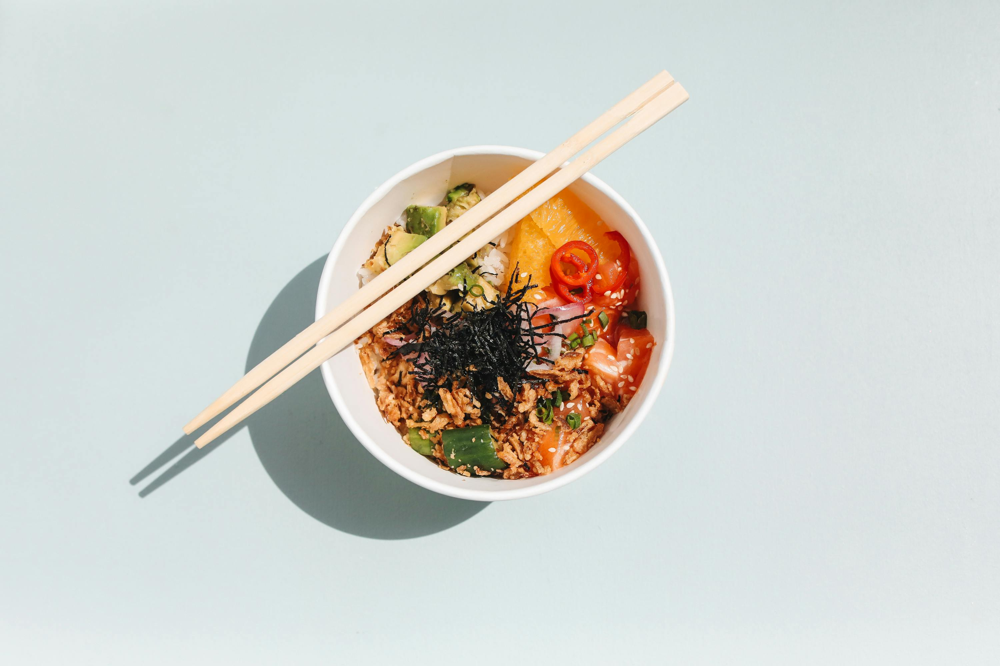
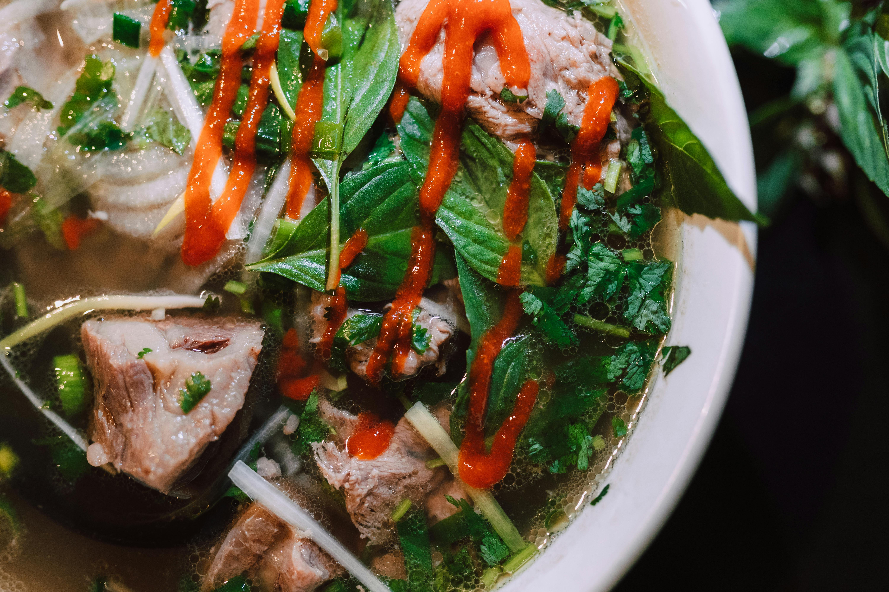
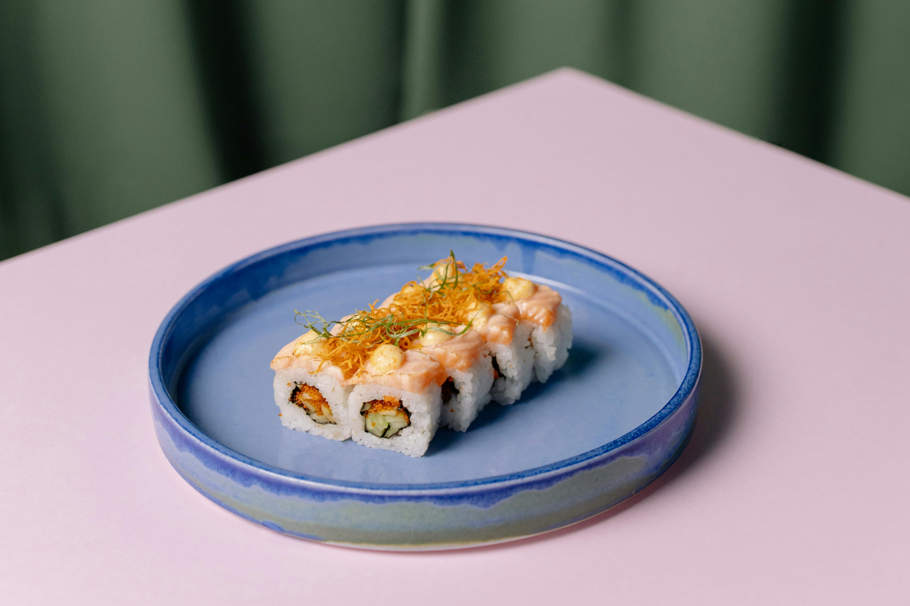
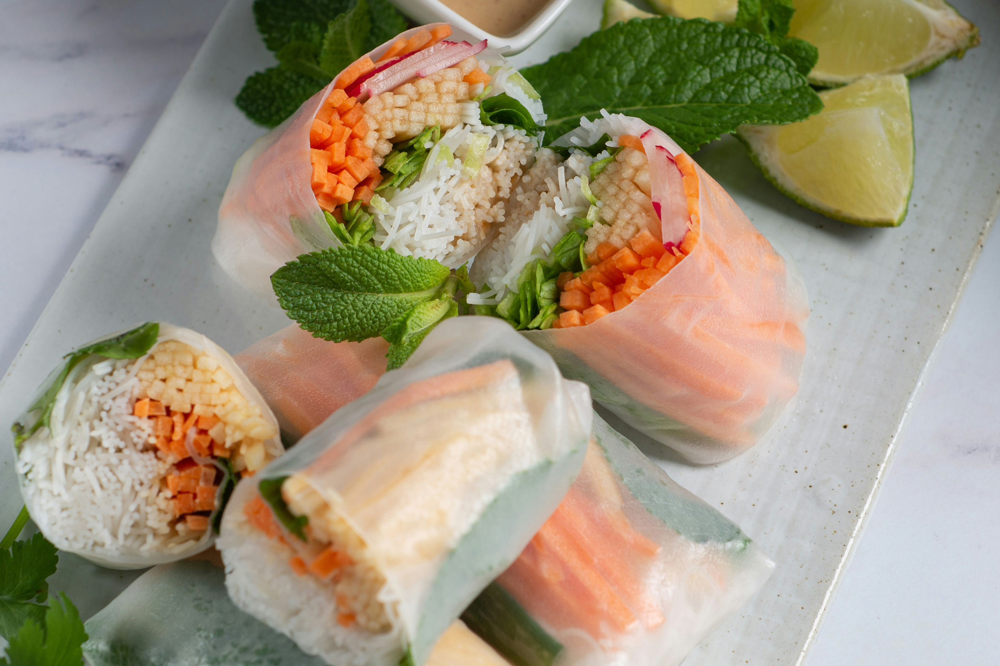
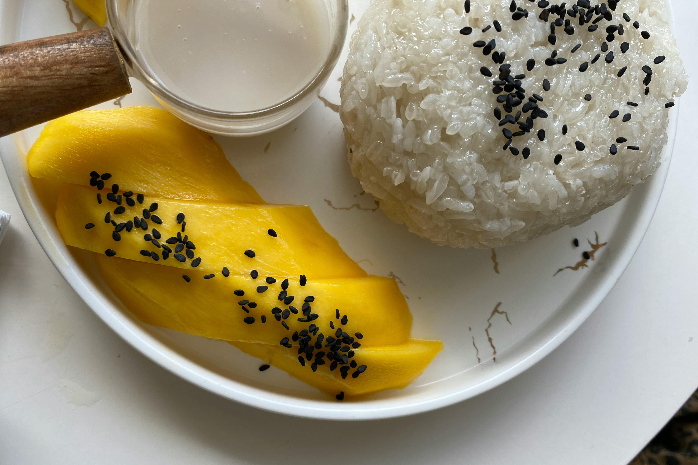
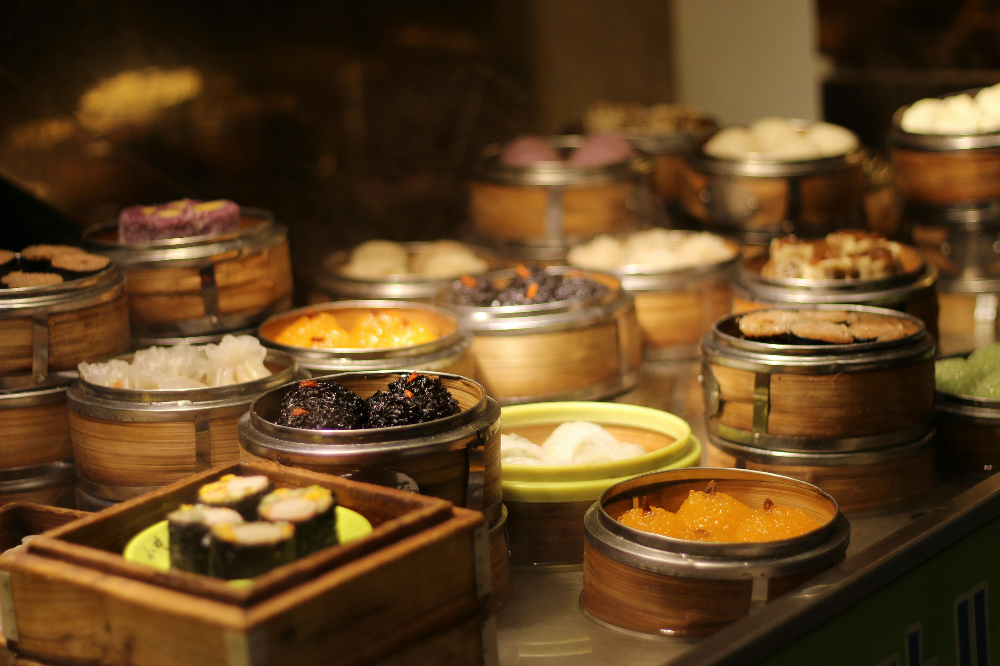

Poke bowls are a Hawaiian dish featuring raw, marinated fish over rice, blending fresh island flavors with Japanese and Polynesian influences.Mooncakes are rich, filled pastries traditionally enjoyed during the Mid-Autumn Festival, symbolizing reunion, harmony, and Chinese cultural heritage.Mochi is a chewy Japanese rice cake made from glutinous rice, traditionally enjoyed during celebrations as a symbol of good fortune.

Phở is a fragrant Vietnamese noodle soup made with slow-simmered broth, rice noodles, and fresh herbs.

Sushi is a delicate harmony of vinegared rice, fresh fish, and seaweed, showcasing Japan’s appreciation for precision and simplicity in cuisine.

Gỏi cuốn, or Vietnamese spring rolls, are a refreshing blend of shrimp, herbs, and rice noodles wrapped in rice paper.

Mango sticky rice is a beloved Thai dessert that pairs sweet ripe mango with coconut-infused sticky rice.

Dim sum is a traditional Chinese dining experience featuring small, shareable dishes like dumplings and buns.